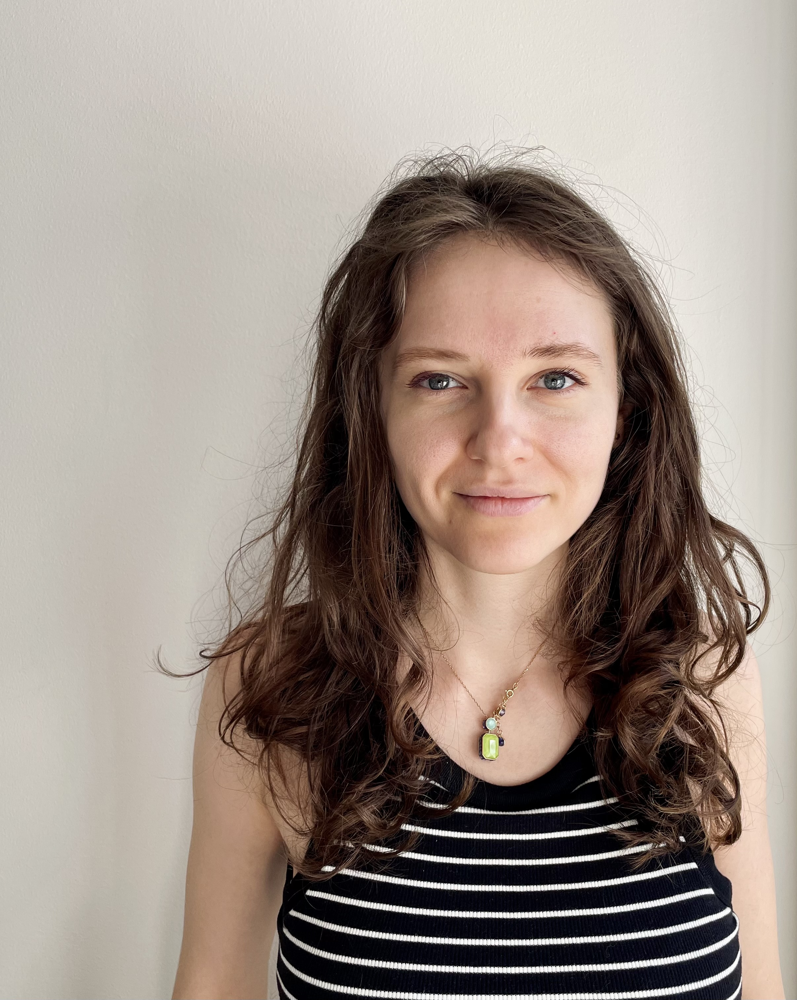

Bringing order to chaos.
Simplifying complexity. Delivering results.
Навожу порядок в хаосе.
Упрощаю сложное. Довожу до результата.
I build clear processes, establish communication, and make sure the team can work calmly and effectively. Я создаю понятные процессы, выстраиваю коммуникацию и делаю так, чтобы команда могла работать спокойно и эффективно.

I'm comfortable working in situations where there's no ready-made structure. I dig into context, gather scattered information, and build processes that actually work. Мне комфортно работать в ситуациях, где нет готовой структуры. Я разбираюсь в контексте, собираю разрозненную информацию и выстраиваю процессы, которые работают.
People come to me when they need to untangle a mess, bring order, and calmly resolve a situation. Люди приходят ко мне, когда нужно разобраться, навести порядок и спокойно решить ситуацию.
Things become calmer around me — because I hold focus, create clarity, and pass that calm on to the team. Со мной становится спокойнее, потому что я держу фокус и создаю ясность, заражая команду своим спокойствием.
Managed the full license procurement cycle — from request to payment and ongoing tracking. Я вела полный цикл закупки лицензий — от запроса до оплаты и дальнейшего учёта.
Worked at the intersection of support, product, and operations — combining user communication, analytics, process improvement (Workflow design, Jira Automation), and team coordination. Работала на пересечении поддержки, продукта и операций — совмещала коммуникацию с пользователями, аналитику, улучшение процессов (выстраивание Workflow, Jira Automation — для автоматизации процессов), координацию команд.
The company moved to remote in a single day. Approximately 200 employees needed new licenses urgently. I coordinated vendor, admin, and accounting, accelerated payment, and kept management informed — without involving my team lead. Компания за один день переходила на удалённую работу. Нужно было срочно перевести примерно 200 сотрудников на новые лицензии. Я координировала работу между вендором, администратором и бухгалтерией, ускоряла оплату и держала коммуникацию с менеджментом без участия моего тимлида.
No one before me understood how telephony licensing worked. I mapped the system, determined which licenses were needed, and built a clear management process. До меня никто не понимал, как работает лицензирование телефонии. Я разобралась в системе, определила сколько и какие лицензии нужны и выстроила понятный процесс работы с ними.
I independently figured out Oracle licensing through documentation and vendor communication, then fully documented the licensing process. Я самостоятельно разобралась в лицензировании Oracle через документацию и общение с вендором и полностью задокументировала процесс работы с лицензиями.
I love systems, though spontaneity doesn't scare me — it adds interest to life. I'm inspired by beauty in details and a mindful approach to everything. Я люблю системность, хотя спонтанность меня не пугает, а привносит интерес в жизнь. Вдохновляет красота в деталях и осознанный подход к жизни.
I believe even complex things can be made simple and understandable. Считаю, что даже сложные вещи можно сделать простыми и понятными.
Over the past few years I've built life from scratch in several countries — alongside motherhood and continuous learning. This gave me strong resilience, flexibility, and the ability to keep processes under control even in an unstable environment. За последние несколько лет я выстроила жизнь с нуля в нескольких странах — параллельно с материнством и постоянным обучением. Это дало мне сильную устойчивость, гибкость и способность держать процессы под контролем даже в нестабильной среде.